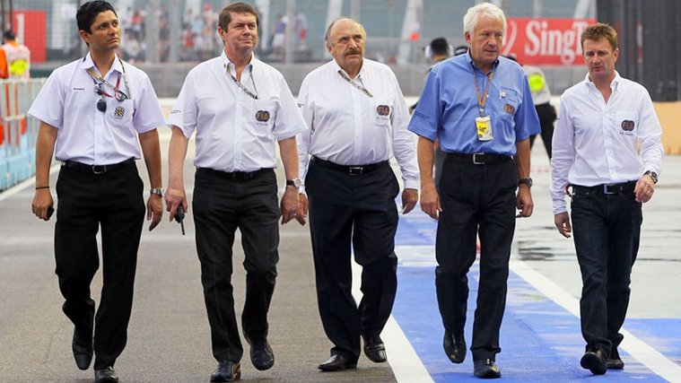

F1 domare (FIA) Fia styr alla regler och är domarna för F1.
- Gul flagga betyder att man ska sakta ner och att man inte får köra om. Det uppstår
vid mindre avkörningar och gäller bara vid den delen av banan. - Grön flaga innebär att banan är ren och säker och att de får fortsätta köra fullt och köra om igen.
- Röd flagga innebär att man avbryter körningen. Alla bilar kör tillbaka till depån och
väntar tills de får köra ut igen. Kan uppstå vid stora krascher eller lagning av banan - Blå flagga innebär att bilen bakom ska varva dig(under race) eller är snabbare(under kval).
Då måste man släppa förbi den bilen inom 3 kurvor annar blir det straff. - Ifall det blir en stor krasch kan en säkerhetsbil komma ut på banan och då ska alla bilarna
köra på led efter den för att farten ska hållas nere under rensningen av banan.
Säkerhetsbilen kan vara ute många varv men när den kör ut från banan är det ledaren av racet
som bestämmer när det ska bli grön flagga igen . När ledaren kör max så får de andra också göra det och racet är igång. - Parc fermé betyder stängd park och är en plats i depån där bilarna står efter varje kval runda
och efter racet för att domarna ska kunna undersöka alla bilarna utan att lagen ändar på dem.
Det innebär att lagen inte får ändra inställningar eller modifikationer på bilen under den tiden.
Bilarna är kvar under dessa regler ända tills racet börjar. Ett undantag är när det regnar,
då får lagen jobba på blien. - I F1 finns det 3 olika sorts däck (Hard, medium och soft) hårt till mjukt. Det hårda håller längre
men än långsammare och tvärtom om med det mjuka. I varje race måste man köra på minst 2
olika däck. Vilket innebär att alla måste göra minst ett depåstopp. Varje stopp tar ungefär 20 sekunder. - I depån får man inte köra snabbare än 80 km/h annars får man bestraffning.
Bestraffningar
- Det vanligaste straffet är 5 sekunder vilket kan avtjänas i depån eller läggas till efter racets slut.
(Vid mindre händelser t.ex köra utanför banan, köra för snabbt in i depån eller mindre kontakter.) - Ett annat vanligt straff är "Drive through" vilket innebär att man måste köra igenom depån i och hålla.
hålla hastigheten utan att stanna. Detta är ett värre straff än 5 sekunder men är också för mindre händelser. - Ett vätte straff är "10 skunder stop and go". Det innebär att man måste köra in i depån och ställa sig
i 10 sekunder vid sitt stall utan att någon rör bilen. Det är ett allvarligare straff vid t.ex oschysst blockering, kollisioner,
ignorerad blåflagg eller tjuvstart. - Det hårdaste straffet man kan få är "svart flagga". Det innebär att du bli diskad och att du måste köra
tillbaka till depån och avsluta racet. Det händer väldigt sällan och kan komma vid ignorerade straff eller
om man bryter mot tekniska regler.